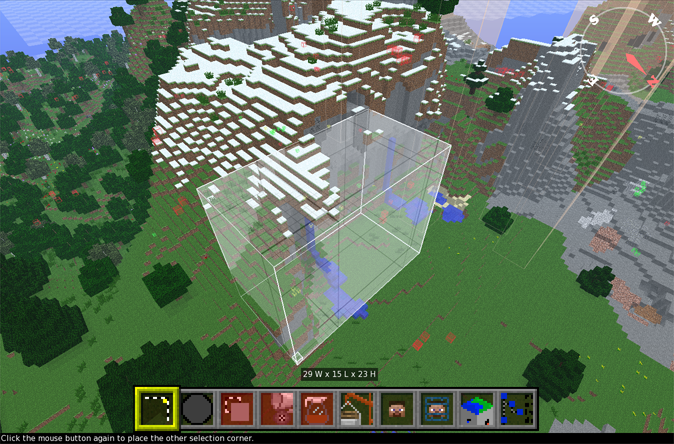
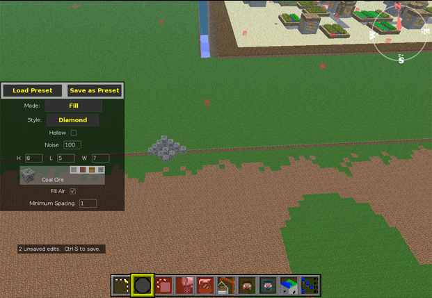
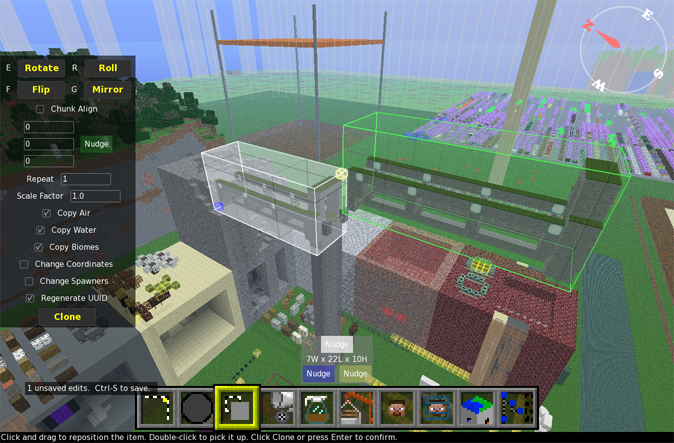
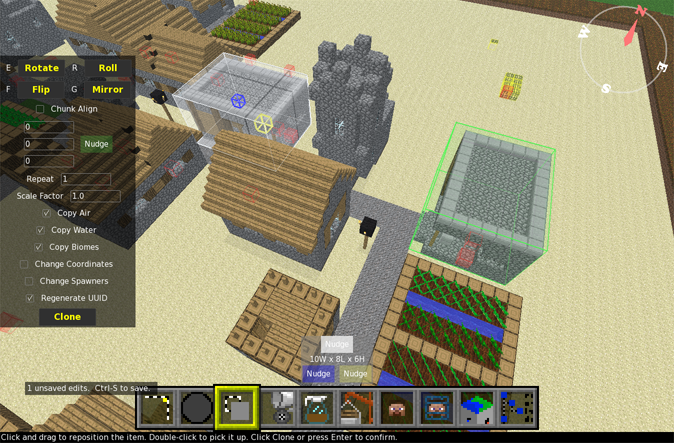
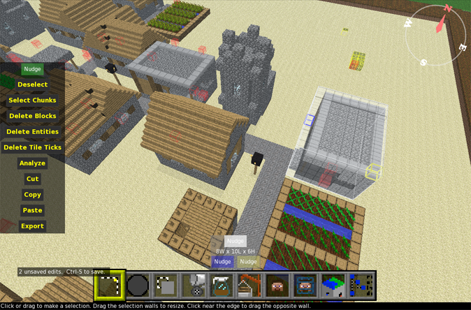
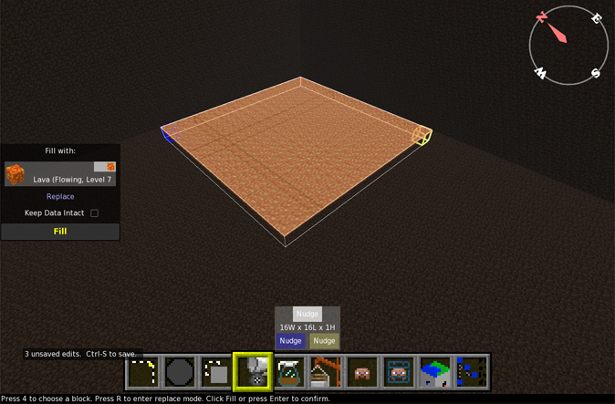

The MCEdit unified project was born out of the community wanting to revive the aging program after Codewarrior had
moved on to MCEdit 2, and since has gained a small, but dedicated team, even so anyone wanting to contribute is welcome.
Note: We are not directly affiliated with Codewarrior, and due to the nature of a community driven open source project
we don't accept donations. Any money sent to Codewarrior won't be received here.
----------------------------------------------------

MCEdit is a versatile map utility, designed for editing Minecraft maps. With it, you can open a level and fly around in glorious 3D with multiple levels of detail! Select millions of blocks and clone them anywhere else in the level. Fill a boxy selection with the block of your choice, or replace one kind of block with another. Export blocks to a schematic file for later use. Import a schematic or an entire level into any world using import. Move players, spawn points, or even add and delete players. Create and and remove chunks from the world. Fill blackened areas with light. And much more with modular Filters!
Default Controls: [Camera] WASD - Move Camera IJKL - Pan Camera Shift / Space - Altitude C - Stop/Slow Movement Tab - Toggle Chunk View Right-Click - Toggle Look-Mode Right-Click and Drag - Quick Look [Basic UI] Left-Click - Use Tool 1-9 - Select Tool Mousewheel - Change Tool Distance ESCAPE - Cancel Action/Return to Select/Menu [General Tools] Control-Z - Undo Control-Y - Redo ALT - Show block info [Select] DELETE - Remove Selected Blocks Scroll Up - Increase Reach Scroll Down - Decrease Reach Middle Mouse - Reset Reach Alt-Z - Long-Distance Mode Alt(Hold) - Blocks-Only Modifier [Brush] E - Rotate Brush G - Roll Brush R - Increase Brush Size F - Decrease Brush Size Z - Line Tool Alt-E - Rotate Block Alt-G - Roll Block Alt-Click - Pick Block [Clone] E - Rotate Selection R - Roll Selection F - Flip Selection G - Mirror Selection Control - Snap Clone to Axis [Fill and Replace] R - Replace X - Swap [Chunk Control] Z(Hold) - Select Chunks ALT(Hold) - Deselect Chunks [Function] F1-F5 - Open World1-World5 O - Open from File N - Create New World Control-S - Save World Control-W - Close World Control-A - Select All Control-D - Deselect Control-G - Teleport to Coordinates Control-F - Change view distance Control-M - Disable Renderer (Debug) Alt-F4 - Close MCEdit
Here's a quick overview of a few of the different tools we have:
-
Selection: Make a selection by marking its corners. Press again to switch
corners.
-
Brush: "Paints" the landscape using a selection of brushes. Use Alt to pick block.
-
Clone: Copies the selected blocks. Click to set the copy down, then press "Clone"
to clone.
E R F G
to transform blocks.
- Fill: Fills the selection with a chosen block type, optionally replacing another type. R to start replacing, E to swap materials.
- Import: Import a Schematic file or an entire level into the current world.
- Player: Click to move the player. Press twice to teleport.
- Spawn: Click to move the player's spawn. Press twice to teleport.
- Chunk: Create, delete, and light chunks. Prune away all of the chunks outside the selection.
- NBT Edit: Edit the raw NBT data for the loaded world. Use with caution.
There are a few Nudge buttons scattered around. To use them, click and hold down on one. While holding the mouse button, use the movement keys (defaults: WASDShiftSpace) to move the related item around. Hold Right Click to nudge further.
If you have a powerful computer, press Control-F to see farther.
Selection Tools
Mark a selection using blue and yellow cubes. Here is a selection in progress.

A completed selection.

The selection tool can also be used to export schematics and do some other basic tasks.
Brush Tool:
The brush tool allows you to "Paint" the world using preset shapes, you can use RFEG to Increase size, Decrease size, rotate and roll this tool.

Hold Z after placing a brush and click a second point to create a solid line of that brush. Line spacing adjusts how close together brushes are.
Clone Tool:
Quickly copy blocks within the same level. The selected blocks are cloned into the green box and will
follow your cursor around until you click. Click the green selection again to pick it back up.

Use the keys E R F G to rotate, roll, flip, and mirror a cloned structure.

Once you are happy with the clone's location, click Clone or press Enter to apply, a selection will appear over the cloned area when complete.

Fill Tool:
Pretty self-explanatory, fills the selected area with the chosen block. Can also replace certain blocks.

Import tool:
The import tool lets you import blocks from different sources: It can place blocks previously saved using the select tool to a schematic.
It can also import an entire level into another level. It will ask you to choose a level or schematic. After you've chosen,
the level or schematic will appear in the green box. Although it may take a few seconds to display the
contents of the import, it is fully loaded and can be placed without waiting for everything to render.

Here, I've placed
the destroyed city.
As before, you can click to pick the blocks up, and use E R F to rotate, roll, and flip them.

Press ENTER or click Import to construct. Constructions of up to 64 million blocks should take less than a minute. The copy is done once you regain control. You should press Control-S to save your level now. The lighting recalculation for this city took about 3 minutes on a Core i5.

Et voila.

Chunk tool:

When you pick the Chunk tool, the visible selection is
automatically expanded to cover all of the chunks it touches. Press Create to create all missing chunks in the selection, ignoring any chunks already present. Press Destroy to remove any chunks within the selection. Use Prune to keep all of the chunks in the selection, and delete the ones outside. All of these will ask you for confirmation because there's no way to undo them.
Finally, you can press Relight to fix any bad lighting within the selected chunks. If other programs leave your level full of black spots, you can fix it with this.
(not pictured: Player and Player Spawn tools, DELETE operation)
Download
Click here for downloadsOpen and save the following formats, compressed or non:
-Alpha/Beta/Release PC version Maps (level.dat + folders)
-Classic Indev (*.mclevel)
-Classic Creative/Survival (*.mine, server_level.dat) **
** If your Classic level fails to load, or loads with the blocks all out of order, put the dimensions of the map into the filename, e.g. server_level_256_256_128.dat.Import schematics created by MCEdit, schematics created by Redstone Simulator, and inventory files created by INVEdit. (as chests!)
Make backups!
Report any bugs to the GitHub Issues page.
Caveats
After increasing the window size, mouse input no longer works correctly.
Restart MCEdit to fix this.
Support for non-English computers and foreign character sets is shaky. For best results, put the MCEdit folder directly into your C:\
Creating and deleting chunks will save them to disk or delete them immediately.
Cannot resize finite levels.
Many tiles are replaced when converting from the older maps to Minecraft Alpha maps. All cloth tiles are bleached white and any "Infinite" liquids are replaced with still liquids.
The conversion also works the other way: Blocks introduced since Alpha are converted to white cloth when moved to a Classic level. There is no way to control which blocks are replaced during a conversion.
There is no conversion between the old Indev and the older Creative/Survival.
Take caution when copying between them.
Classic levels require their dimensions to be in the file name, or else MCEdit will attempt to guess them based on the file's size.